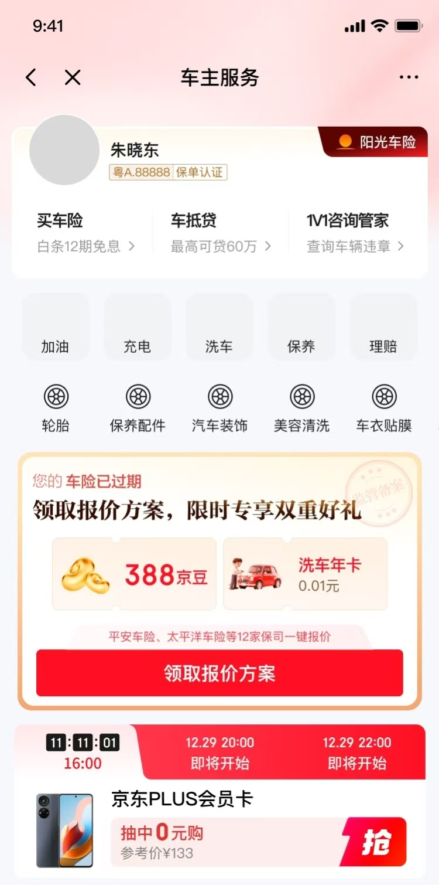
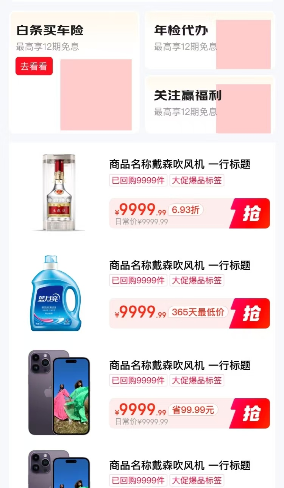

王馨蔚
2027届校招生 · 产品运营 / 市场营销 / 用户增长 / 策略运营
🎓 教育背景
香港中文大学（深圳）
CUHK, Shenzhen
市场学理学硕士（AI方向）
2025.09 - 2027.06
核心课程：客户关系管理，数字时代的营销研究，数字与社交媒体社交，大数据市场营销策略
西南财经大学
SWUFE
精算学 本科
2021.09 - 2025.06
GPA: 3.7 综合排名：2/41 (5%)
🏆 全国大学生数学竞赛 四川省二等奖
🏆 第十届全国统计建模大赛 四川省三等奖
🏆 大学生创新创业项目国家级立项
🏆 甲等学业奖学金（Top1）· 优秀学生干部
💼 实习经历
京东集团股份有限公司
京东科技 · 车险业务组 · 增长策略运营实习生
以Q3保费6.5亿、报价成功量178万为目标运营车险用户全生命周期，分用户增长、车险差异化运营、转化链路优化三大核心方向，搭建运营策略并持续迭代产品功能，最大化保费增量。
· 增长策略与产品功能迭代：一方面围绕三大目标推进产品需求落地：用户增长方向输出首页窗口期卡片人群扩量、动态素材透传、618营销配套需求；差异化运营方向启动车主服务阵地0-1搭建；转化链路优化方向推进车险四合一页面改造及衍生需求。独立撰写15+份BRD，输出完整用户路径与交互方案，协调产研设计完成需求评审与排期；另一方面搭建用户分层运营体系，设计多元化权益策略，提升用户报价与转化水平。
· 重点项目落地与效果验证：负责并落地上述规划中两大核心项目并追踪业务成效，推进首页卡片人群扩量与素材迭代，曝光提升300万量级，CTR提升3%，日均保费增收10万元，月度保费增加218.2万元；推进车险四合一页面链路改造，一期汇总51项走查问题，在核心点位开展AB测试，独立落地二期报价抽奖功能迭代，报价率提升6.5%、提核率提升10%、报价成功转化率提升2%。
· AI赋能车险增长运营：输出车险对话Agent与「AI猜保费」创新链路BRD，完成交互方案设计并交付Demo；搭建AI数据推送预警机制，规范数据清洗、阈值计算、分级告警与基线更新规则，自动化监控渠道报价指标波动，快速识别业务异常并及时调整策略，实现运营监控提效。
北京字节跳动科技有限公司
TRAE · 用户运营实习生（开发者AI）
以拓展产品用户规模、迭代产品功能为目标，国内通过社群运营维护C端开发者并引导沉淀至中文社区，海外依托社交媒体宣传引流，实现海内外用户双向增长。
· 社群运营与用户增长：负责8个飞书社群（累计3万+ C端开发者用户）的运营，累计策划并落地40+场干货分享等活动；挖掘核心用户需求并建联1000+活跃用户，完善管理员激励政策；主导TRAE一周年活动，定向建联300+用户并带动15%用户新增，提升产品声量。
· 社区0-1搭建与冷启动：深度参与TRAE官网社区0-1冷启动活动策划，主导「社群-社区」引流与运营体系搭建；负责社区板块规划及内容同步，首日上线活跃用户4000+，7天累计访问10.8k；同时优化答疑响应机制稳定在1分钟内，提升社区活跃度与用户体验。
· 海外社媒与产品GTM运营：负责X、Instagram、LinkedIn海外社媒运营，搭建五大内容模块SOP，产出180+条内容，依托流量复盘持续优化传播方案；深度参与SOLO产品海外GTM全流程运营，统筹预热、发布、传播全周期节奏，优化宣传物料并监控曝光数据，扩大产品海外品牌声量。
自如寓（北京）住房租赁有限公司
自如比邻运营部 · 用户增长实习生
以扩大澳洲租房业务成交规模为目标，运营15家供应商保障房源供给并通过私域渠道挖掘用户，持续提升房源点击率与订单转化。
· 澳洲供应商管理与增长优化：针对澳洲租房市场资源分散、转化低效问题，搭建标准化供应商运营增长体系。全英对接15家供应商打通全流程履约与服务机制，通过数据复盘优化房源排序匹配策略，提升用户浏览体验，实现供应商续约率92%、房源点击率提升27%。
· 用户运营与推广策略落地：负责C端用户挖掘与转化增长，依托小红书渠道精准引流获客。搭建三维用户分层画像，对标竞品输出差异化增长策略；落地用户调研与素材运营，产出12套推广方案，海报曝光超5万次，活动参与度提升40%，驱动市场订单转化增长31%。
Glocal Link
海外广告运营实习生
用Excel高级功能整合广告账户多源数据，搭建「实时监控-异常预警」体系，支撑风控与投放策略优化；按「地区-行业-时效」分类海外市场信息，搭建可视化资源库；设计消耗看板、开户进度表替代文字汇报，优化跨部门沟通。最终广告ROI提升18%、封户响应时效缩短30%；团队获取海外动态时长从2天缩至4小时；跨部门沟通周期减少25%，保障3个核心广告项目落地。
深圳市蓝凌软件股份有限公司
西南大区 · 市场营销实习生
主导西南大区百人线下活动全流程（策划、会务对接、现场控场），备3套应急方案，参与人数120+、客户满意度95%，带动产品咨询量增60%；用PS/秀米制作32篇公众号推文、18张海报，优化内容后阅读量涨50%至800+；整理行业动态并输出2份竞品分析报告，纳入部门策略库支撑2个推广方案落地。
🛠️ 项目经历
参半品牌AI全流程推广方案
2025.09 - 2025.12参与学校小组项目，选定参半品牌策划AI全流程推广方案，结合品牌特性将学生群体定为核心目标受众，拟定精准的用户画像分层及定位；负责6个动画风AI视频全流程制作。
第十四届中国风险管理与精算论坛 · 全国一等奖
2023.07参与设计「千里烟波」农业收入保险项目，聚焦立体农业与复合种植场景，借鉴美国全农场收入保障模式完成产品方案设计。进行产品适用性分析，并结合农业经营特点输出市场端建议。
🐶 京东 · 重点项目
1 四合一车险链路优化项目
📅 上线节奏：
5/27
四合一页面第一版上线（纯报价流程，无营销模块）
5/28
收集51个走查问题：🐛Bug 17 · 🎨交互 15 · ⚡待优化 19
5/29
小首页icon点位上线，首次数据测试（观测反馈+全链路数据）
📊 AB测试各利益点表现：

🔄 AB测试替换结果：
| 是否可替换 | 报价用户占比 | 成单占比 | 保费占比 |
|---|---|---|---|
| ❌ 否（仅报价抽奖一期无法替换） | 32.09% | 22.36% | 22.10% |
| ✅ 是 | 32.33% | 72.16% | 77.90% |
| 总计 | 64.42% | 94.52% | 100.00% |
🎯 最终成果：
测试结果：报价成功提核率明显提升，至高24.59%，报价成功转化率提升在1-2pp之间。量最大的搜索直达渠道贡献了大部分核心指标提升。
2 车主服务0-1搭建项目


在京东车险业务中启动车主服务阵地从0到1的搭建工作，作为差异化运营方向的核心项目。
完成完整的产品方案设计与UI设计稿输出，规划车主生态服务入口，以延长用户生命周期、提升平台粘性为目标，构建围绕车主高频需求的服务矩阵。
🎯 核心设计思路
🌟 业务价值
覆盖加油、停车、保养、救援等8大高频服务场景，通过服务宫格化降低用户决策成本，搭配个性化推荐算法提升服务发现率，构建车险→车主服务的全生命周期闭环。
3 AI大数据预警系统
🔄 AI预警系统流程图
📊 ① 数据采集
每日10:00拉取前一日13个渠道的报价量、成功量、成功率数据，标准化清洗入库。
🧮 ② IQR异常剔除
用IQR方法剔除36个异常日（分布在13个渠道），基线不被异常污染，去异常后大部分渠道CV降至15%以下。
📐 ③ 基线建立
用清洗后的"正常日"数据计算均值、标准差、P10等统计量，建议每月初滚动更新基线。
🔍 ④ 每日对比
当日数据与"正常基线"对比，偏离即触发告警——被剔除的那些异常日，正是告警要捕获的目标。
🚨 ⑤ 触发告警（6类规则）
R1绝对值下限 / R2成功量下限 / R3成功率下限 / R4异常高值 / R5连续低位 / R6成功率持续低
📤 ⑥ 分级响应
🔴P0 1小时内响应 · 🔴P1 当日确认 · 🟡P2 观察1-2天，自动推送到飞书群。
📋 查看分渠道监控速查表（高/中/低量级梯队）
| 梯队 | 渠道 | 日均报价 | CV% | 告警占比 | 策略 |
|---|---|---|---|---|---|
| 高 | 商城增长 | 17,795 | 3.7% | 95.3% | 绝对值（极稳定） |
| 高 | 平台业务 | 10,218 | 15.7% | 74.2% | 绝对值+高值检测 |
| 高 | 商城搜索 | 5,564 | 15.2% | 78.1% | 绝对值（稳定） |
| 高 | 商城订单 | 4,967 | 7.9% | 91.0% | 绝对值（极稳定） |
| 中 | BBC合单 | 1,668 | 34.2% | 71.2% | 绝对值+连续低位 |
| 中 | 汽车 | 685 | 7.9% | 87.1% | 绝对值（稳定） |
| 中 | 触达 | 664 | 35.8% | 63.6% | 绝对值+连续低位 |
| 低 | 其他/保险服务/小程序 | ~ | ~ | ~ | 趋势为主 |
📌 方案制定：2026-07-28 · 基线数据：30天去异常后（IQR法） · 建议每月初滚动更新基线
💭 个人思考
点击卡片展开阅读完整思考 ↓
赛道不分优劣，核心是依托岗位沉淀可迁移能力，主动挖掘行业价值
展开 ▾两段实习覆盖AI互联网、传统金融保险两个完全不同的赛道，让我彻底打破"行业决定成长上限"的固有认知。
字节AI赛道贴合新兴热点，主打用户运营、品牌增长与产品冷启动，聚焦流量、用户、内容的精细化运营；而京东车险赛道属于相对传统的金融行业，并非我最初的兴趣方向，且与日常互联网产品逻辑差异极大。
但这段经历让我深刻明白：行业只是工作载体，个人的方法论、执行力、策略思维才是终身可迁移的核心竞争力。我没有因不熟悉、低兴趣而被动应付，而是主动深耕车险业务逻辑，跳出传统保险运营的固有模式，将互联网增长思维、产品迭代思维、AI数字化思维融入业务，在传统赛道做出精细化运营、数据化迭代的创新价值。
无论是新兴AI产品冷启动，还是传统车险业务增量提效，底层的用户思维、目标思维、复盘思维完全互通，这也让我摆脱了对赛道的执念，学会在任何行业、任何岗位主动发挥自身优势，创造个人价值。
善用AI工具赋能工作，以数字化思维实现高效提效、精准落地
展开 ▾两段实习让我完整建立了"AI服务工作，工具赋能业务"的核心工作思维，实现从人工低效执行到智能高效运营的升级。
在字节实习期间，面对海量社群运营、内容创作、用户答疑、数据复盘工作，我主动运用AI工具辅助内容产出、话术优化、用户需求梳理、数据汇总，大幅降低重复性工作成本，让自己将更多精力投入到活动策划、体系搭建、GTM策略优化等高价值工作中。
延续这套思维，在京东实习期间，我不再局限于工具使用，而是进阶到AI业务落地：主动设计车险对话Agent、AI猜保费创新产品链路，输出完整BRD与Demo方案；同时搭建AI数据预警体系，通过标准化的数据清洗、阈值计算、分级告警规则，实现业务指标异常自动化监控，替代传统人工盯盘、人工复盘的低效模式，提前捕捉业务流失节点、支撑策略快速迭代。
这让我深刻意识到，未来运营与产品工作，不仅是执行业务，更要懂工具、会赋能、能创新，用数字化能力构建个人核心壁垒。
重塑沟通认知，深耕用户思维，学会借力用户资源、双向成长
展开 ▾字节用户运营的核心工作，让我彻底跳出"单向服务用户"的浅层认知，读懂了用户沟通、用户建联、用户借力的深层运营逻辑。
长期对接海内外C端开发者用户，让我学会换位思考，精准捕捉用户真实需求、痛点与期待，打磨高效、有温度的沟通方式；同时明白优质用户是产品最核心的资源，通过建联核心活跃用户、优化激励体系、搭建用户社群生态，充分借力用户的专业能力、传播能力，助力产品冷启动、声量提升、社区生态完善。
更重要的是，我学会了处处皆可学习，人人皆是老师。成长不止来源于上级的指导，更来自身边的同事、合作的用户、对接的跨部门伙伴。我主动向资深运营学习活动策划与社媒打法，向核心开发者学习产品使用痛点，向跨部门伙伴学习项目推进逻辑，在沟通、协作、对接中持续吸收经验，快速补齐自身能力短板，实现全方位成长。
稀缺资源下的高效协同，学会换位思考、价值驱动推进落地
展开 ▾京东实习的产品策略工作，让我攻克了跨部门协同的核心难题。产研、设计资源长期饱和、排期紧张，单纯依靠岗位权限很难推动需求落地。
通过长期实践，我总结出高效的跨部门协同逻辑：以业务价值为核心，用数据赋能需求，用细节降低协作成本。所有需求落地前，优先量化业务收益、增量价值与风险痛点，让产研清晰认知需求优先级；拆分大型迭代需求，落地小成本、高回报的MVP版本；提前梳理问题清单、同步业务背景、主动跟进走查复盘，减少团队额外沟通成本。
学会换位思考、主动赋能合作方，让资源有限的情况下，最大化推进业务落地。
高压多线程工作，搭建个人工作体系，实现高效统筹不慌乱
展开 ▾两段实习均处于高强度、多线程的工作状态：字节同期并行社群运营、社区搭建、海外内容产出、GTM筹备多项工作；京东同步推进多份BRD撰写、项目迭代、数据监控、策略调整、跨部门评审等工作。
长期高压环境下，我搭建了成熟的个人工作方法论：通过优先级分层、任务台账管理、流程标准化、重复工作工具化，区分紧急/重要任务，固化日常复盘、数据监控、需求跟进流程，用AI工具替代低效重复工作，预留风险缓冲空间，完美适配互联网快节奏、高强度的工作模式，实现多任务高效统筹、零遗漏落地。
✨ 其他技能
🌍 英语水平
CET-6，IELTS（6.5）
💻 数据分析
熟练运用SQL，R，Stata
📜 证书
AFMA 金融证书